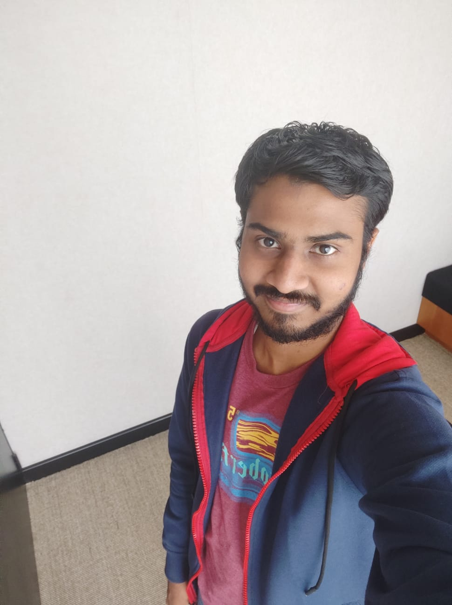

Agentic AI & Orchestration
Built LangGraph workflows with specialized retrieval, reasoning, validation, and escalation agents, backed by PostgreSQL/pgvector.
Senior Generative AI Engineer / Agentic AI & LLM Systems
I build agentic AI and production LLM systems for enterprise customer support and life sciences. My work spans multi-agent orchestration, RAG, fine-tuning, and reliable AI workflows, backed by Python, FastAPI, Django, PostgreSQL, and AWS.

About
I am Ahamed Musthafa R S, a Senior Generative AI Engineer with 7+ years of software engineering experience and 3+ years building production GenAI and LLM systems. Since August 2026, I have been working at Tredence Inc in Bengaluru on retrieval-augmented multi-agent support workflows.
My experience spans enterprise customer support and life sciences: specialized agents, grounded-source validation, compliance checks, clinical copilots, and domain-specific fine-tuning. At Saama, my work reduced clinical query-build time by 75%, model integration time by about 50%, and platform effort by up to 80%.
Built LangGraph workflows with specialized retrieval, reasoning, validation, and escalation agents, backed by PostgreSQL/pgvector.
Fine-tuned open-source LLMs with LoRA on synthetic domain datasets, achieving over 80% classification accuracy for logical discrepancies in clinical data.
Built an orchestration harness for controlled execution of deterministic AI workflows, with grounded-source validation, compliance checks, and workflow controls.
Developed a retrieval-augmented multi-agent support workflow using LangGraph and PostgreSQL/pgvector, grounding responses in enterprise knowledge with dedicated retrieval, reasoning, validation, and escalation agents.
Built controlled LLM orchestration, an Interactive Review Listing copilot, and natural-language code generation tools. Fine-tuned domain LLMs with LoRA and designed model service interfaces for production rule engines.
Built pharma CRM and therapy-management applications with Python, Django, JavaScript, and PostgreSQL. Implemented patient-support program rules that improved product efficiency by 40%, and added AWS CloudWatch monitoring.
B.E. in Computer Science and Engineering, Government College of Technology, Coimbatore 2015 - 2019
GenAI Stack
At Tredence, I developed a retrieval-augmented multi-agent support workflow using LangGraph and PostgreSQL/pgvector, with specialized agents for retrieval, reasoning, response validation, and escalation.
boot: genai portfolio online
Selected Work
A lightweight, no-PHI/no-PII pharmacovigilance workbench for public adverse-event exploration. Combines PRR/ROR signal metrics and source-grounded summaries with citation-first retrieval from openFDA, FDA labels, RxNorm, and PubMed.
Live WorkbenchAn autonomous decision agent for shopping and travel. TinyFish WebAgent handles web interaction, Gemini supports reasoning, and ElevenLabs enables conversational voice research and comparison.
RepositoryAn autonomous code-review and remediation agent that analyzes repositories, detects fragile implementations and technical debt, reasons about corrective actions, and generates targeted code changes.
Contact